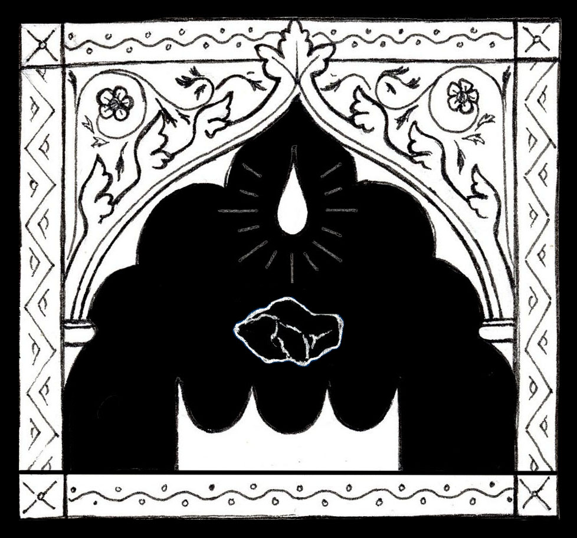

On that day, I saw him descend from his realm, the Higher Realm, on an immense mountain in the Northern Sea. Following him was one who had the appearance of gold, one who had the appearance of fiery smoke, and one who had the appearance of a star. They were all radiant, but none more than he, so much so that I fell on my face. In his right hand was a scepter, and in the hands of the golden one was a chest that looked like glowing metal, and inside the chest were twelve coals and also twelve precious crowns, which were ground and filed from the finest jewels in the mountain.
When they arrived at the bottom of the mountain they came south across the waters to the land, and when they arrived on the land, they found a place that was good, and there he laid the crowns on the earth. Once this was fulfilled, he took his scepter and made a hole in the earth that was within each crown, so that there were twelve holes. From the glowing chest he took each coal with his hands, and then lay each one in a hole, until all the holes were filled with a piece of coal and covered with earth. He then released a drop of his golden blood in the middle of each crown, which kissed the earth and sank beneath the surface. Once he had fulfilled this act, the ground began to quake, and a figure erupted from beneath each crown and raised it up, so that the crowns sat perfectly on each figure's head. Smooth were their bodies, which were made of coal, and they stood as beautiful statues in a circle around him, whose radiant light caused them to shimmer exceedingly. After all of this had taken place, he, according to the order of their ascent from the ground, named them. When he named them, the insides of their crowns glowed, their eyes opened, and they breathed with life.
The first child was Jasper, a boy, the second Sapphire, a girl, the third Agate, a boy, the fourth Emerald, a girl, the fifth Onyx, a boy, the sixth Ruby, a girl, the seventh Chrysolite, a boy, the eighth Beryl, a girl, the ninth Topaz, a boy, the tenth Turquoise, a girl, the eleventh Jacinth, a boy, and the twelfth Amethyst, a girl. They had consciousness, and he declared unto them:
"You are my twelve children, whom I love. Though you are made of coal, you are jewels in my eyes, and the jewels and precious stones of this earth will be named after you. I have made you to be the twelve rulers, the twelve princes and princesses of this Lower Realm, to rule it with me. So I have placed crowns of jewel on your head, on which I have written myself and yourself. These you must not take off, lest you suffer." He continued to speak with an authority that could not be ignored, and I understood all of his words. "Though you are unique in manner and appearance, you must be united as one, for you have all come from the same mountain, my mountain. Stay together and remember me."
Jasper then spoke, as he was the eldest jewel. "Father, what is your name, that we may know you by?"
And he replied "My name is Magus and King, but you may call me Father." King was not a title for him, but his name, for all kings of this world derive their title from his name. Neither was Magus a title for him, but his name, for all who are called magi derive their title from his name. Therefore, he is both a magus and a king.
Now Magus King addressed all the Jewels "But as for you, your titles as princes and princesses derive from my children of the Higher Realm, whose names are Prince and Princess." He then presented the three who had descended from the mountain with him. Of the one with the appearance of gold, he said, "This is my firstborn son." Of the one with the appearance of fiery smoke he said "this is my firstborn daughter." And of the one with the appearance of a star he said "This is my youngest son." And these three were told to regard the twelve Jewels as their own brothers and sisters, whom they shall love and care for. This filled his first son and daughter with joy, but it did not please his youngest son.
Time passed then until it had reached the sunset, and they were now sitting in the circle where they had previously stood for the first time. Here, they shared their first meal to celebrate the birth of the Jewels and the dawn of the Lower Realm. It was a magnificent feast that lasted a week, with every kind of food imaginable and unimaginable. On the last day Jasper asked Magus King, "Father, what do you wish of us?"
Magus King smiled and spoke thus to the Jewels: "Tomorrow, go to the river that surrounds the edge of this land, and there I will meet you. Jasper and Sapphire, you two are the eldest, and I give you authority to lead your brothers and sisters. Watch over them and stay together."
When he finished saying this, he departed from them, and his three children from the Higher Realm followed. Upon their departure, a dense wind surrounded me. I was afraid and covered my face, but a great voice on the wind swirled around me and said. "Do not be afraid, for you have been chosen to see things that no one has seen. Therefore, write down everything you have seen and everything you will see. Now turn around!"
I then turned around and there before me were the twelve Jewels walking to the destination their father had set before them. When they had stopped for a rest, Amethyst went off on her own and Jasper went to look for her. When he was alone, a beast attacked him. The beast struck at his crown, but it would not fall off. And the beast attacked his neck, but it would not break, for the coal that made up Jasper's body was strong. Jasper called out for help, and Sapphire heard him. She knocked the beast off of Jasper, and it ran off. Amethyst then ran to the loud sound. When they were sitting together, Sapphire scolded Amethyst for running off and asked Jasper why he had searched for Amethyst alone. But when he tried to speak, his voice was different; it was garbled. And his words were unclear. So a few times he tried after that, with no success, and he became frustrated and withheld from speaking.
When they all arrived at the river, Magus King appeared there. He spoke thus to Jasper "Now you, my son, what has happened to your voice." Sapphire answered on behalf of him and said "He was attacked by a beast."
"Did I not tell you to stay together, Jasper?" asked Magus King. Jasper nodded, and his father continued. "For now, you will not be able to speak clearly, but wait for what I will give you." Jasper looked down and nodded again.
"Now, my Jewels, each of you will take two pails. Go into the river and fetch stones from within it. Pick only stones that are smooth and have no cracks or bumps. Fill your first pail with these. For your second pail, you need only fill it with water from the river. When all of you have completed this, take each of your two pails back to the center of the land from which you came, and there I will meet you." The twelve Jewels were very strong because of their coal bodies, so this was not a heavy task for them.
On the way back, I bore witness to something that puzzled me. While they had stopped again on the path, a stranger came up to them. The Jewels appeared to be afraid of the stranger whom they had never seen before, and whose appearance was like that of dropping a stone into peaceful waters. But as the ripples in water produced by a stone fade out, so went their alarm, for the stranger was very charming. Everyone seemed to be taken by him, save Jasper and Sapphire, who remained cautious. Sapphire asked the stranger "Who are you, and where do you come from?
The stranger smiled at her, then at the other Jewels, and bowed. "Hear me. I am a prophet, on errand of the king." Sapphire then said "Our father did not tell us about you. How do we know you are what you say?"
"I know that your eldest brother, Jasper, the firstborn, has lost his clear voice. I would like to give it back to him." At once, many of the Jewels gasped. Sapphire warned Jasper not to trust the prophet, but his desire for a voice was stronger than the warning in her heart. So the eldest jewel bade on the prophet, who pulled out a shining glass cup and said "drink this." So Jasper took the cup, and drank from it. When he drank the liquid, it burned his throat. But then he tried to talk and his voice was like new.
All of them, including Jasper and Sapphire, rejoiced and praised the prophet, who asked to join them on their trip, which they agreed to. At the center of the land they arrived not too long after, where their father was waiting for them. When he asked about their trip, none of them spoke of the prophet, who was nowhere to be seen.
"My children, whom I love, here is what you must do, for it is almost fulfilled. Count all of the stones you have. Then, mix water from the river with the dust of the ground and make clay. Take each stone and cover it with clay, and then form that into a brick. Make as many bricks as there are stones, and lay them out to dry in the sun. With these bricks you will build a hearth that will be at the center of the land. When you are done making the hearth, do not touch it or use it. Wait for me." He took time to look at all of them. "I tell you this, work together and gather together. Encourage and speak to each other. Leave no one behind. " He said that he would return when they were ready, and before he left, he took some time to listen and speak to each of them alone.
So on the first day they counted the stones. And on the first day the prophet went to Amethyst and said "your eldest brother and sister do not respect you. They do not hear you or regard you, after they blamed you for the beast. They look down on you, but you should be separate from them. I can see that you would be a better ruler, and have more favor on your own. They will be evil rulers, and they are lowering you in your father's sight." He said more that I did not hear, but after those days Amethyst stayed close to him and spoke little to the others.
On the second day, they all mixed the clay, added a stone, formed bricks, and laid them out to dry. And on the second day, the prophet spoke with both Jacinth and Turquoise, when each of them were alone. When they came back they didn't speak.
On the 3rd day, they made mortar and laid the first foundation of bricks. And on the third day the prophet spoke with Topaz, Beryl, and Chrysolite, when each of them were alone. When each of them came back they didn't speak.
On the 4th day, they made mortar and laid the second foundation of bricks. And on the 4th day the prophet spoke with Ruby, Onyx, Emerald, and Agate when each of them were alone. When each of them came back they didn't speak.
Now, I stood there watching them, and they ceased to work together, save Jasper and Sapphire, who were unaware and spoke only amongst themselves.
No sooner had they finished the hearth than the prophet planned a feast for them. But it was no feast in my eyes, for each jewel, each brother and sister, was told to prepare his or her own meal. And it was that night that I beheld something that spurred such a sorrow in my heart. Dark was the sky when the prophet set a fire in the hearth. No one protested to this, and as they ate around the fire, no one spoke to each other, save Sapphire and Jasper. When the fire had almost died Amethyst stood up and declared "I am leaving."
Everyone turned to Amethyst, and Sapphire asked "What do you mean?" And Amethyst said to her, "I mean what I said, I am leaving this place. What do you care of my departure? You and Jasper care only for yourselves." After this, each of the other Jewels, save Jasper and Sapphire, said that they would leave too. With harsh words they accused each other of harsh acts.
Then I saw and heard strange things that struck me with fear. They passed quickly before me.
The voices of the Jewels began to switch bodies,
so that no one knew to whom they were speaking.
And the heads of the Jewels began to switch amongst themselves,
so that no one knew at whom they were looking.
I could no longer hear.
Amethyst departed the hearth and walked to the edge.
Her brothers and sisters followed.
On the ground there Amethyst threw her crown. Her head was bare. Also, Jacinth, Turquoise, Topaz, Beryl, Chrysolite, Ruby, Onyx, Emerald, Agate.
Crowns down and heads bare.
Not Sapphire not Jasper.
They beseeched the others.
But the others departed,
Scattered in many directions.
Jasper coughed,
his voice was taken.
Clouds moved over my eyes, everything was covered.
I mourned in the mist.
Dark Mode!